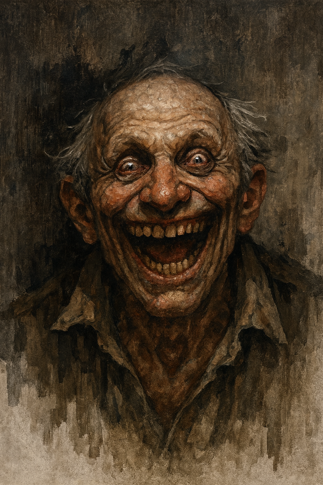
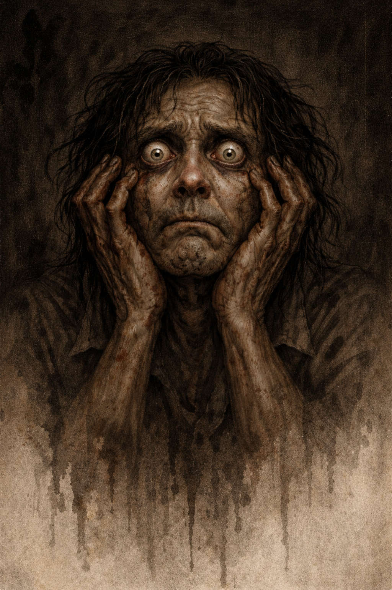
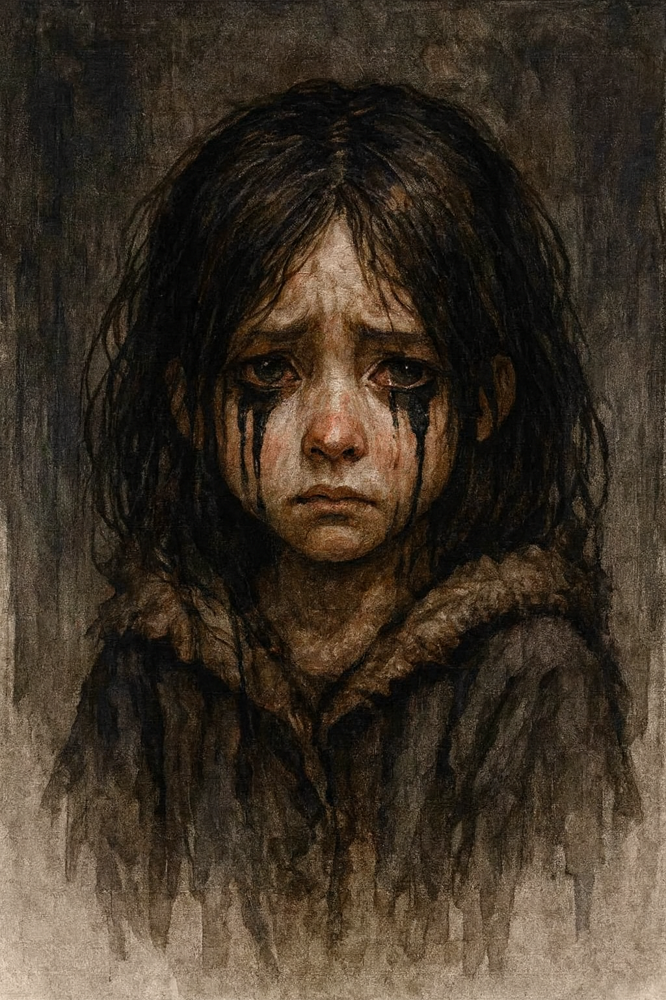
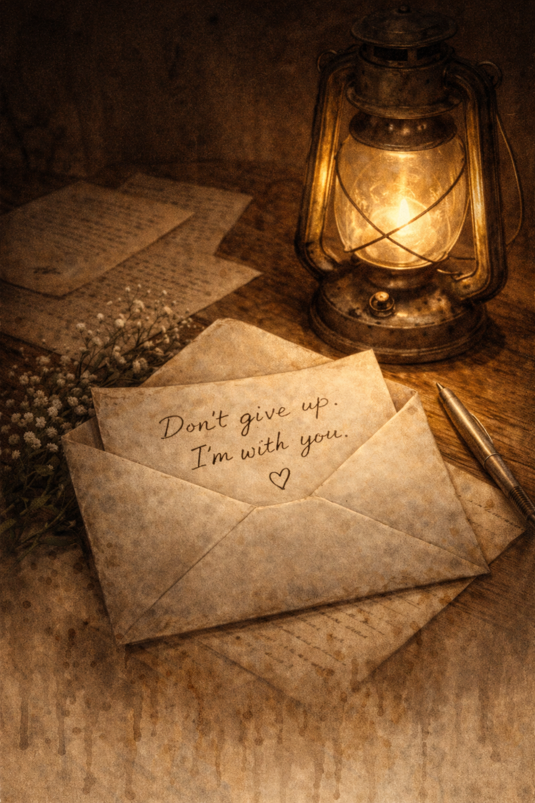
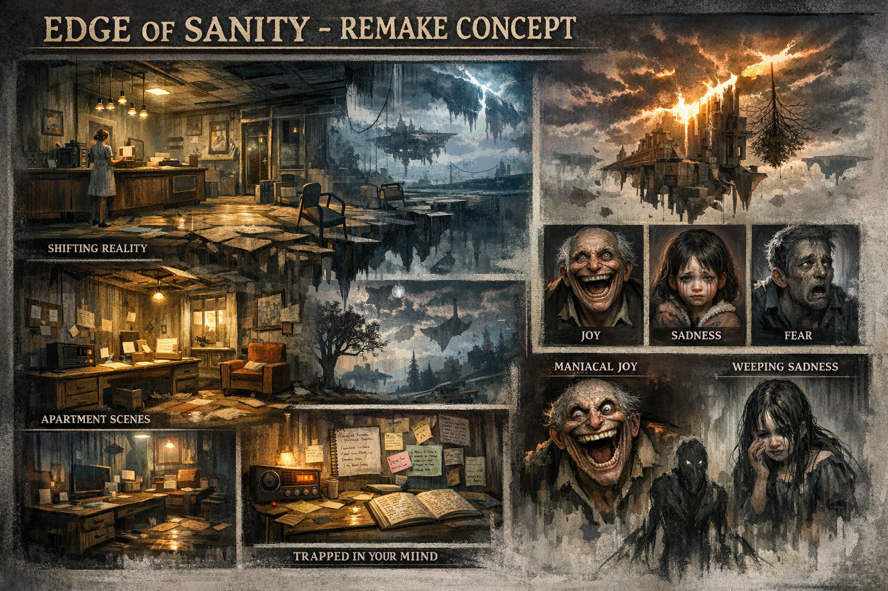
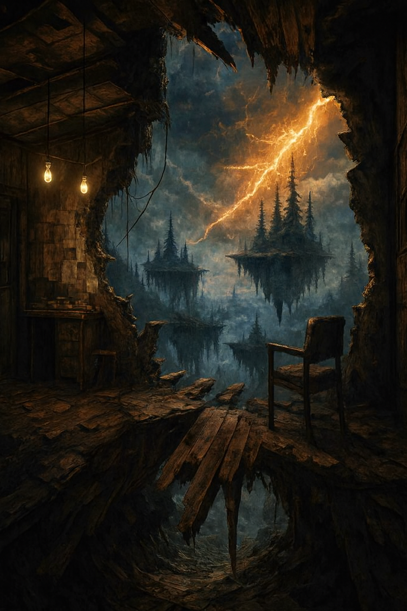
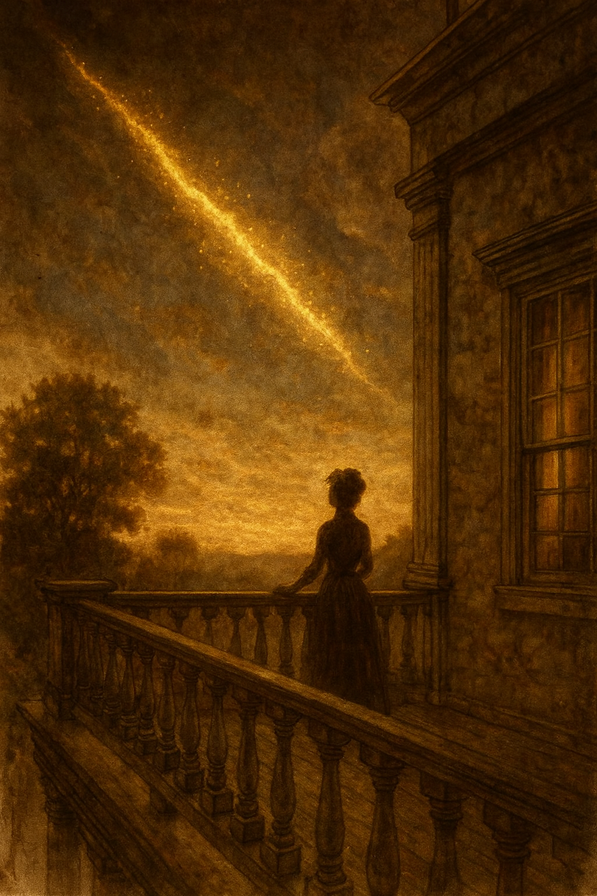

THE WORLD
Reality is broken. Buildings float. Trees grow upside down. The sky is torn open by glowing rifts. All you can do is hope for the world to recover.
THE PREMISE
You work shifts at a quiet asylum. You check on patients. You clean, organize paperwork, and perform routine tasks. Between shifts, you return to your apartment.
Over time, small inconsistencies appear. Notes are misplaced. Radios cut out frequently. Patients repeat phrases you do not remember hearing before. Some rooms feel different each time you enter them. Nothing announces itself as wrong. But nothing feels right.
THE PATIENTS
Jason

He carries a smile that always seems to arrive first, brightening the space before he even steps into it. His laughter rolls out easily, the kind that makes people join in without thinking.
Brandon

He notices everything. The smallest shift in expression, the quietest change in the room, the subtle signs most people overlook.
Tilly

She speaks softly, choosing her words with care, as though each one deserves respect. She's very quiet.
Esperanza

You’ve never met her in person, but she’s the one who helped you secure this position at the asylum. She’s always been pleasant to speak with.
MEDIA GALLERY
A glimpse into the fractured world of Edge of Sanity. Visuals degrade alongside the narrative, revealing a reality that is slowly tearing itself apart.

The asylum suspended in a broken sky.

Reality begins to fracture inside the asylum.

An emotion pushed beyond its breaking point.
DESIGN PHILOSOPHY
Edge of Sanity is a slow-burn psychological horror game about routine, emotional decay, and a reality that gradually comes undone. Set in a quiet asylum, players perform mundane tasks as the environment, its inhabitants, and their sense of normalcy begin to fracture.
PRESS KIT
Title: Edge of Sanity
Genre: Psychological Horror
Platform: PC
Developer: Tetrad Games
Description:
Edge of Sanity is a slow-burn psychological horror game about routine, emotional decay, and fractured reality. Set within a shifting asylum that exists inside a broken mind, players perform mundane tasks while the world, its inhabitants, and their own perception unravel.
Key Features:
- Emotion-driven NPCs that evolve into threats
- Environmental storytelling and reality fragmentation
- Routine-based gameplay that turns unsettling over time
- Minimalist horror with no reliance on jump scares
- Atmospheric audio and visual degradation tied to narrative
Contact:
tetradgamesdev@gmail.com
RECRUITMENT
Tetrad Games is expanding our development team for our current project, Edge of Sanity (working title). We’re building a disciplined, high‑clarity, zero‑ambiguity environment where every contributor understands their role, their responsibilities, and the standard of excellence expected from them.
We are seeking prior military and veteran professionals only.
This is a volunteer, pre‑formation collaboration. No compensation or employment is implied.
Who We’re Looking For
- Proven experience in your craft (design, programming, art, audio, writing, production, etc.)
- A track record of reliability, accountability, and clear communication
- The ability to work within structured pipelines and follow established processes
- A willingness to collaborate in a disciplined, respectful environment
Requirements
- Must be prior military or a veteran
- Must provide proof of service
- Must provide proof of qualification for the role you’re applying for
- Must agree to the Tetrad Games Project Collaboration Agreement
- Must be comfortable working in a volunteer, pre‑company setting
About the Project
Edge of Sanity is a narrative‑driven game currently in active development. Our team operates with military‑grade clarity and intentionality — every system, workflow, and deliverable is documented, structured, and built for repeatability.
What You Can Expect
- A disciplined, supportive team environment
- Clear pipelines, documentation, and expectations
- Leadership that values structure, accountability, and autonomy
- A project where your contributions matter and are respected
- No drama, no ambiguity, no wasted time
How to Apply
Send the following to tetradgamesdev@gmail.com:
- Your name and the role you’re applying for
- Proof of service
- Proof of qualification (portfolio, GitHub, resume, etc.)
- A brief summary of your experience and what you bring to the team